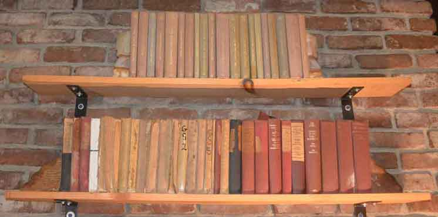
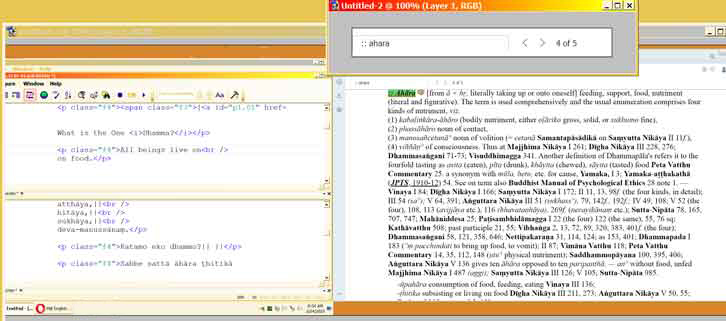
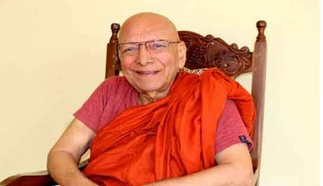

2025
What's New?
■
Individual articles on this page can be linked-to by appending '#' sign plus the abridged form of the entry date [e.g. #O.2.21.19]
to the end of the URL in the address bar.
For example: ~/dhammatalk/dhammatalk_forum/whats.new.2019.htm#O.2.21.19
Remember that this page will be renamed to "whats.new.0000.htm" at the end of the year and a new "whats.new.htm" will be started for the new year.
This site is intended to be adopted by those interested in making the Dhamma their theme for meditation and for Dhamma researchers of all stripes. It is intended as a pattern, to be used as a basis for a personal desktop work environment.
Disposition of BuddhaDust
Not in order of priority.
I will add to this list as inspired to do so.
At the foot of the main Gallery page there is a list of various persons that could have full entries in the Gallery.
Segment the Pāḷi and all the translations. This should be done sentence-by-sentence as is done with the Christian Bible. Segments should have ids and hrefs.
Link all citations in the PED to their suttas or translations.
Link all the main entries of the Sutta Search index and the Index of Similes to their references.
When segmentation reaches its various stages of completion, Sutta Search and the Index of Similes should be linked more closely to the subject referenced.
The What's New? OBLOG should be removed to the archives and a new What's New? page either a blog or just giving information as to what is new should be started.
The current Forum subjects should be removed and integrated with the Archives. I see no way that a new Forum could be started. The closest thing to a new Forum that could be helpful would be a person who would answer questions by giving site-specific references. Otherwise, aside from useless posts, the site will soon be dominated by those of other views. This is not something I would like to see and will result in misdirection.
The current Webmaster page, the dedication page, and the history of the site pages should be moved to the archives.
The contact should be changed.
A proper index should be created for all pages of the site.
A Dictionary of Grammatical Terms should be created. Set up in the same way as the PED, that is, with ids and hrefs such that the terms can be linked to and from within. It should have the usual abbreviations and a definition and one or more examples.
Links to Glossology terms from within the PED and from the Glossology term to the term in the PED.
A Dictionary of Pāḷi Roots. Again, set up like the PED so that users can insert links where they are interested.
Words in the PED should each have a section preceding the etymology that gives the break-up of the word according to the Dictionary of Pāḷi Roots.
Words in the PED should each have, as well as the sound files they now have, the international symbols for the correct pronunciation.
There is some question as to the correctness of some of the current etymologies; these should be checked and corrected and where possible augmented.
The current Glossology pages could be expanded. The idea here is to give the definition of a term as it is found in contexts located in the Four Nikāyas.
Many useful and tangential works could be added to the Files and Downloads page. A reading library might be made from the list of works in the frontmatter of this dictionary, and from the Bibliography page.
Useless or out-dated pages/comments should be removed or moved to the Archives section.
An index similar to and integrated into the Sutta Search index could "easily" be made for the Bhikkhu Thanissaro translations by using the page numbers found in A Handful of Leaves. A similar thing could be done with the Bhikkhu Bodhi translations.
There are a few older less well-known translations that should be added to the Sutta Index. I do not recommend more recent translations than those of Bhikkhu Thanissaro. I have read many and none seem to be adding anything to the understanding of the Way or the understanding of the Pāḷi. Most are going in exactly the wrong direction.
Well defined or explained additional or alternative definitions of terms in the PED could be added.
Citations from the PED, Sutta Search index, and Index of Similes should be checked for accuracy. Some titles of similes could be made more obvious.
Main entries in the Sutta Search index should be added for well-attested (me, Bhk. Thanissaro, Bhk. Bodhi) terms and cross linked to the existing PTS terms.
Certain terms within the translations (very few, only those which radically change or reverse the meaning) could be given pop-up boxes with links to the PED.
All of my translations should be proofread and where positive translations are made for negative opposites, changed to negative terms can be substituted as this is my intent. inconsistent/varying) use of other translated terms should not be changed.
Text and translations should be made uniform according to the suggestions found at: Towards a Uniform Style for Pāḷi Texts and Translations ... or in some other way.
A smallr version of the PED could be created by eliminating all terms not found in the Four Nikāyas. I believe this would reveal a number of things that would help in detrmining the origins of Pāḷi, the uniformity of the Dhamma and the authenticity of the suttas.
The whole site could be left as it is as an historical artifact. Or ... ahum ... two or more versions of the site could exist together: one the artifact, and any others with as many of these improvements as was considered helpful. It would be acceptable by me if the whole thing were completely abandoned and left to fade away.
Oblog: [O.7.8.25] Tuesday, July 08, 2025
Sutta Search
Index of Similes
At this point these indexes have been brought into usable form. The DB, and GS 1 are fully linked; the rest have only been partially linked or not linked at all. Duplicates have been merged. Subject coverage is that of the PTS books: it varies. Each book had its own indexer and was or was not limited by space.
To find an item that is not linked, go to the PTS page indicated for that entry in the Sutta Index and append the page number [#pg000] to the end of the address. Suttas by other translators are linked to from the Sutta Index or from the PTS sutta at the top of the translation. I understand that this is complicated and will not appeal as a way to search for many, but it can be done and may be useful to some. Those who have the hard copy of these books will find here a convenient way to search the indexes for all 16 volumes.
Oblog: [O.6.16.25] Monday, June 16, 2025 8:46 AM
Credit Where Credit Is Due Department
Responding to a question as to the on-going existence of Nibbāna, Ajahn Brahmali says:
"Nibbāna is not a "thing" that is always present. It's the ending of something, the extinguishment of defilements, followed by the ending of all suffering. If you have a pain in the knee and the pain comes to an end, you would not say that the ending of the pain is always there. You would just say the pain is gone. In the same way, nibbāna just means the ending of all problems.
Ajahn Brahmali's response is one of the best I have seen. It makes understanding that the "Middle Way" and the consequences of following that way is not the doing of something or the getting of something, but not-doing and the way that that results in freedom.
Oblog: [O.5.24.25] Saturday, May 24, 2025
Bhikkhu Thanissaro translation:
AN8 64 Gayā Suttaṃ: At Gayā.
A valuable sutta for those interested in the development of the 'Divine Eye' or clairvoyance. Gotama provides a step-by step progression from the seeing of vague lights, to seeing the forms of beings, to associating with them and conversing with them, to learning of various sorts of information about them to knowing whether or not one had one's self at some time been one of them.
This is also a detailed presentation of the cultivation of serenity based on 'daylight' which is said to be the samādhi most conducive to yielding knowledge and vision. Begin by 'looking at' the vague lights one sees when the eyes are partially closed. Without thinking about the lights, track the lights. The best practice is to not 'focus down,' but to repeatedly glance at, as one does not generally 'focus down' on things in normal seeing, but glances at things. (Wisdom of Don Juan) Overcome the obstacle of delight or surprise, or fear, or attachment to the phenomena or pride in the accomplishment when the vague lights become clearly distinguishable shapes, when the shapes become beings, when the beings become pictures, when the pictures become stories, etc.
The Hare translation made the best of a confused PTS Pāḷi which was, as we have it, abridged without so indicating and was a mess, the BJT Pāḷi was similarly messed up. I have put the Pāḷi into the form I believe was originally intended and have reconstructed Hare's translation accordingly. You've been told.
For more on clairvoyance and the way it has become confused with awakening see the discussion here.
Oblog: [O.5.22.25] Friday, May 23, 2025 11:33 AM
Bhikkhu Thanissaro translation:
SN5 47.29 Sirivaḍḍha Suttaṃ: To Sirivaḍḍha.
Ānanda comforts the householder Sirivaddha who declares himself as a non-returner in his presence.
The Four Lower Yokes[1]
| Pāḷi | Olds | Woodward | Bhk. Thanissaro | Bhk. Bodhi |
| Sakkāya-diṭṭhi | Thinking that there is no other way of seeing that pile of stuff there than in some way thinking of it as your own | individual-group view | Self-identification views | Personal-existence view |
| vicikicichā | Doubt, uncertainty | doubt-and-wavering, | uncertainty | doubt |
| Sīlaabbata-parāmāso | hanging on to the opinion that ethics will free one from saṃsara | wrong handling of habit-and-ritual, | grasping at habits and practices | wrong grasp of behavior and observances |
| kāma-c-chando | wishing for sense pleasures | sensual desire | sensual desire | sensual desire |
| vyāpādo | deviance: Vya the not path. | malevolence | ill will | ill will |
It is very important that you get at lest this much down pat. That you have no doubts about how this works at all. I think it is possible to see all these alternative translations as saying the same thing but from different angles.
Where I see the possibility of doubt is with #3: Sīla-abbata-parāmāso.
What is the difference there?
My translation tells you what wrong handling is and why it is important that you not view ethical behavior as the solution to the problem of pain, rebirth and kamma.
The difference in my understanding and that of the other translators is partly a result of the fact that I am translating, as well as for humans, for beings other than human where the idea of 'body' is sometimes different than it is for humans.
Ethics (Sīla) deals with the way you behave in this world. To get beyond this world (beyond saṃsara) you need to stop relying on ethics alone and see that it is behaving in this world, (wishing for sense pleasures and engaging in deviant behavior) that is bringing you to it again and again, over and over, since the beginning of time.
And you need to see that it is because of your belief that this body, or the sensations, or the heart or some belief system that is the self of you that you are busy in this way.
You need to let go. When you have done that for even a little while, even for little things, you will see that it results in freedom. And you can extrapolate out: letting go little things results in a little freedom: letting go of it all would result in ultimate freedom ... that is if I wern't bound up downbound up-end down by this pile of ka ya here.
That is what it means not to have doubt. You have seen for yourself that it works and how it works.
[1]Edit: The title of this note changed from "Fetters" to "Yokes" to more closely comply with the literal meaning of the term. Own-yokes, or yokes to personal identity, or yokings, or self-yokes.
Oblog: [O.5.22.25] Thursday, May 22, 2025
Bhikkhu Thanissaro translation:
SN2 20.12 Dutiya Sigāla Suttaṃ: The Jackal (2).
A second thought about the contrasting of a 'certain' ungrateful bhikkhu with an old jackal with mange — perhaps the jackal has more gratitude than this fellow!
Oblog: [O.5.21.25] Wednesday, May 21, 2025
Bhikkhu Thanissaro translation:
SN2 20.11 Sigāla Suttaṃ: The Jackal (1).
A hair-raising utterance forecasting the doom of 'a certain bhikkhu' of hypocritical behavior.||
Just a nit, but I think "cool" here sounds pleasant where I would prefer to see Rhys Davids' "cold". This sutta is about Devadatta and his affliction is anything but pleasant.
 Noble Warrior by Bhikkhu Thanissaro and Khematto Bhikkhu (Isaac Ospovat).
Noble Warrior by Bhikkhu Thanissaro and Khematto Bhikkhu (Isaac Ospovat).
Oblog: [O.5.20.25] Tuesday, May 20, 2025
Bhikkhu Thanissaro translation:
SN2 20.10 Viḷāra Suttaṃ: The Cat.
A parable illustrating the danger of enjoying the benefits of living as a bhikkhu without guarding deed, word and thought, calling up self-possession, and self-restraint.
Oblog: [O.5.19.25] Monday, May 19, 2025
"Those beggars, beggars,
who explain not-Dhamma as Dhamma;
following these beggars, beggars,
a great many beings are lead astray
and thrown off track.
Thrown off,
a great many beings experience unhappiness.
And loss, disservice, and pain
is brought to gods and men.
Furthermore beggars,
such beggars create great bad kamma
and lead to the disappearance of the good word."
AN 1.130 This quotation is not directed at Bhikkhu Thanissaro.
Bhikkhu Thanissaro translation:
SN2 20.9 Nāga Suttaṃ: Bull Elephants.
A parable illustrating the danger of enjoying the benefits of living as a bhikkhu without being careful to avoid the many pitfalls that are associated with incomplete training in self-control.
Oblog: [O.5.18.25] Sunday, May 18, 2025
For Shame!
There is a very interesting discussion going on over at Sutta Central's Discuss and Discover forum:
Jewels linked to Buddhas remains go to auction
This discussion is nominally concerned with the views of those holding views concerning the possession and ownership of "cultural artifacts".
Each of the discussants takes a slightly different approach to the issue. Each discussant believes he is holding a correct view. Each is in some way or another opposed to other views — does not or will not or cannot see wherefrom the others come.
What is more important is what is being missed — the connection of this sort of debate to the orientation of the Buddhist position.
Start with the question 'What is a cultural artifact?'
Whose culture?
Putting aside the issue of stolen materials, is the cultural artifact of the Nepalese, or Magandese, the cultural artifact of the modern Indian or the Afghanistani or the Persian? Is not the cultural artifact of the Indian, also the cultural artifact of the British colonial ruler? Is not that also a cultural artifact of all peoples of the world?
Go at it from the other way around:
How is a collection of Buddhist bones and some gems the cultural artifact of a people that actively repressed The Buddhist part of their cultural heritage?
Is that collection of gems in any way a cultural artifact of the Buddha?
Where is the line that separates the view that a collection of gems and bones is a cultural artifact and the land itself is not?
Has not the land of virtually every human being on earth been stolen from some other group of people or animals?
It is an issue that will never be solved to the satisfaction of all peoples. Is it proper then that people struggling to escape pain, be giving their time to a discussion of a thing that will never be free of pain?
Can we not see in these discussions themselves the way in which taking a position on one side or another is taking a position that both causes pain and has no thought of the real issue dealt with by the Buddha?
Can we not see that this is a result of an organization at a higher level that has taken a disastrous position with regard to the attempt to change the world?
I'm just saying it looks to me like a great number of people are being distracted to their peril because of a wrong direction being claimed to be a direction advocated by the Buddha.
This does not look like a good thing to me.
Bhikkhu Thanissaro translation:
SN2 20.8 Kaliṅgara Suttaṃ: Blocks of Wood.
A parable illustrating the danger of living the soft life.
As long as I'm on a rant here: This means the soft life intellectually as well as of the body. A person that directs his attention to changing the world clearly knows nothing of the difficult task of letting go of the world. Not knowing that one does not know the first thing about the Buddha's message. Is this really what you are looking for? It would be better to walk alone.
Oblog: [O.5.17.25] Saturday, May 17, 2025
Bhikkhu Thanissaro translation:
SN2 20.3 Kula Suttaṃ: Families.
A parable illustrating the benefits of liberating the heart through friendliness. The method for warding off demonic harassment.
Bhikkhu Thanissaro has here (and I believe in many other places) translated ceto as 'awareness'. This term is better understood as 'heart'. PED gives either 'heart or mind'. 'Awareness' is better an imperfect (that is, good only in certain cases) translation for 'sati'. And simple awareness, even if developed as a slant given to metta (friendliness) is not the thing, and skips over the thing, that will prevent demonic harassment: that is feeling the friendliness and the release of the heart. I don't even think that there is such a thing as 'awareness-release". One is aware of release, but the release does not come about from awareness, it comes about from the friendliness. The heart is freed as a result of the cultivation of this friendliness and subsequently there is awareness of that freedom. That is not awareness-release, that is awareness of release. And still it is not the awareness that prevents the harassment, it is the state of the heart.
My say. Maybe he has a way of looking at it I don't see.
Oblog: [O.5.16.25] Friday, May 16, 2025
As the center poll
is the central pole
of a house with a
center poll,
so the central pole
of the word
is the word
appamāda.
Paṭhavi, Āpo, Tejo, Vayo.
The Path of Eve's Apple
will Teach you the Way Out.
After Adam ada appa,
he passed matter
passed water
passed ... "um" ... had a little heart burn,
an'e pass-a vayo.
Sorta geevs ya a lumpini throa...*
*ats-a "throw-away" gag line.
The Adam's Apple. The appature tru whitcha utta soun.
Remember.
a = don't
p-pa = sputter
mada = fat.
adamappa
Bhikkhu Thanissaro translation:
SN2 20.1 Kūṭa Suttaṃ: The Ridge-Beam.
'The Roof Peak', of the Buddhist Canon: a parable showing that all bad states depend on ignorance so one should live without carelessness.
Oblog: [O.5.15.25] Thursday, May 15, 2025
Two 'wrongs' do not make a 'right'.
 The Buddha's Last Word an essay by Bhikkhu Thanissaro.
The Buddha's Last Word an essay by Bhikkhu Thanissaro.
Bhikkhu Thanissaro translation:
AN 7.68 Aggi Suttaṃ: Fire.
A hair-raising sutta where the Buddha compares horrendous tortures here as preferable to hell for the person of evil intentions. When this sutta was finished sixty monks vomited blood, sixty gave up the training and returned to lay life, and sixty bhikkhus became Arahants.
Oblog: [O.5.14.25] Wednesday, May 14, 2025
Bhikkhu Thanissaro translation:
AN 6.17 Kusala Suttaṃ: Skillful.
The Buddha attempts to inspire some novices to wakefulness by way of numerous examples of the energetic characteristics of great men.
My father calls me back just before I get out of earshot. I return. He asks:
"Where would you be if I hadn't called you back?"
He does this only after he has determined that I have completely forgotten what is coming.
Oblog: [O.5.13.25] Tuesday, May 13, 2025
"I see."
said the blind man
when he couldn't
see
at all.
Bhikkhu Thanissaro translation:
AN 5.210 Muṭṭhassati Suttaṃ: Muddled Mindfulness.
The disadvantages of going to sleep forgetful of mindfulness versus the advantages of going to sleep with mindfulness well set up.
Don Juan deals with sleep and dreaming from within, making the effort of his practice becoming conscious from within the dream; the Buddhist practice is to bring sleep down to the absolute minimum and to completely ignore dreaming with the result that waking life assumes at will the plasticity of dreams and in sleep one remains fully conscious. In the middle is the exercise of command over the sleeping mind through pre-sleep programming. "Let me retain full consciousness while sleeping and dreaming." "Let there be no erotic content, anxiety-provoking content, or evil thoughts in my dreams." "Let me waken at the first appearance of erotic content ... ." etc.
Oblog: [O.5.12.25] Monday, May 12, 2025
Bhikkhu Thanissaro translation:
AN 5.167 Codanā Suttaṃ: Accusing.
A sutta which deals with factors that should be kept in mind by the bhikkhu who would correct another and by a bhikkhu that is corrected by another.
The word here translated by Hare, Bhikkhu Bodhi and now by Bhikkhu Thanissaro as "remorse" is vippaṭisāra and for the reverse avippaṭisāra. The PED defines vippaṭisāra as: "bad conscience, remorse, regret, repentance" deriving it from vi + paṭisāra, paṭisāra being given as #1 "refuge in, shelter, help, protection," and being itself derived from saraṇa #1: "shelter, house." But here I think a better derivation would be from meaning #3: from smṛ "remembrance"; or going back to paṭisāra but there also going to meaning #3 [paṭi + smṛ] to "think back upon, to mention." I think the idea being discussed in this sutta is not remorse, but closer to having second thoughts, doubt for the both the accuser and accused, but in different ways. The guilty accused might well feel remorse, but the accuser would more likely experience doubt. I don't know, but remorse is defined and seems to me to be a very heavy term to be using in a situation where the accuser is actually acting properly and only has a mistaken idea that he should have kept his mouth shut. Sarana is the same word used when "taking refuge" and in that case is speaking of being protected in some way from the onslaught of worldly woes by the straight thinking of the Buddha, Dhamma and Saṅgha, so perhaps here the meaning should be understood as un-protected. Both accuser and guilty parties unprotected until their errors are understood and remediated.
In the end of this sutta the Buddha tells Sāriputta that he is uselessly devoting too much of his time trying to teach those who do not listen.
Oblog: [O.5.10.25] Saturday, May 10, 2025
Bhikkhu Thanissaro translation:
AN 5.56 Upajjhāya Suttaṃ: The Preceptor.
A bhikkhu is discouraged and has become befuddled. Taken to the Buddha by his preceptor he is given instructions as to how to guard the senses, be moderate in eating, live intent on wakefulness, and to cultivate day and night his understanding of the way. Doing all this he achieves arahantship.
Oblog: [O.5.9.25] Friday, May 09, 2025
Bhikkhu Thanissaro translation:
AN 4.157 Roga Suttaṃ: Illness.
In this sutta the Buddha instructs the bhikkhus on disease, contrasting disease of body which some can avoid for a long time to disease of the mind which cannot be avoided even for a moment by one who has not destroyed the corrupting influences.
Oblog: [O.5.8.25] Thursday, May 08, 2025
Bhikkhu Thanissaro translation:
AN 3.97-98 Potthaka Suttaṃ: Bark-fiber Cloth.
This is counted most properly by Bhikkhu Thanissaro as one sutta. It compares the qualities of bark-cloth with those of cloth from Kasi and in each case compares those qualities with qualities found in a bhikkhu.
Oblog: [O.5.6.25] Tuesday, May 06, 2025 8:42 AM
Bhikkhu Thanissaro translation:
AN 3.96 Ājāniya Suttaṃ: The Thoroughbred (3).
A sutta which compares the qualities of a thoroughbred horse that is considered an asset of a king to the qualities of a bhikkhu that make him a worthy recipient of gifts and veneration. Slightly different than the previous.
Oblog: [O.5.5.25] Monday, May 05, 2025
 For the sake of speed in uploading the following abbreviations have been restored to the PED with the result being that this file now loads almost acceptably fast.
For the sake of speed in uploading the following abbreviations have been restored to the PED with the result being that this file now loads almost acceptably fast.
Only abbreviations for the four Nikāyas and a few other most commonly-known and cited works/terms are restored; the less familiar works are spelled out. The below is a list of what was changed:
Abhi = Abhidhamma Piṭaka
AN = Aṅguttara Nikāya
BHS = Buddhist Hybrid Sanskrit
DB = Dialogues of the Buddha
Dhp = Dhammapada
DN = Dīgha Nikāya
Iti = Itivuttaka
Jāt = Jātaka
Miln = Milindapañha
MN = Majjhima Nikāya
SN = Saṃyutta Nikāya
Snp = Sutta-Nipāta
Thera = Theragāthā
Theri = Therīgāthā
Vism = Visuddhimagga
Bhikkhu Thanissaro translation:
AN 3.95 Ājāniya Suttaṃ: The Thoroughbred (2).
A sutta which compares the qualities of a thoroughbred horse that is considered an asset of a king to the qualities of a bhikkhu that make him a worthy recipient of gifts and veneration.
Oblog: [O.5.4.25] Sunday, May 04, 2025
Bhikkhu Thanissaro translation:
AN 2.99 Bāla Suttaṃ: Fools.
A two-line sutta which is an excellent guide to what one should and should not do. Think about what it is that the activist Buddhist is doing. Isn't it taking up a burden that has not befallen him? Is he not, in the face of the overwhelming nature and number of statements made by the Buddha in the suttas that this world is to be abandoned, not corrected by a bhikkhu, making a mighty fool of himself?
Oblog: [O.5.2.25] Friday, May 02, 2025
Bhikkhu Thanissaro translation:
AN 3.1 Bhaya Sutta: Danger.
A sutta which tells us that fear, attacks and troubles (Bhikkhu Thanissaro: dangers, disasters, troubles; Woodward: fears, dangers, oppressions of mind; Bhikkhu Bodhi: perils, calamities, misfortunes; Sister Upalavana: fear, troubles, annoyances. Take your pick or use them all.) originate with the fool but that they can spread out from there. The fool brings fear, attacks and troubles, these things are not brought on by the wise.
I suspect that at least one reason in back of this sutta was the conviction at certain points in one's development (when depressed, at a certain stage in the process of awakening, trapped in a religious mania, when dying,) that all the troubles of this world have been caused by one's self/will be caused by one, along with the impulse to repay this imagined debt or forestall its furtherance in some way ... such as by being nailed to a cross. Pajapati's Problem. You think this is not a problem seen by the Buddha? See SN2.14.003
The simile of how a reed-hut, catching fire, can destroy even a well fire-protected house,[AN03.1 Pali] [AN03.1 wood][AN03.1 bodh][AN03.63 than][AN03.1 upal]
Oblog: [O.5.1.25] Thursday, May 01, 2025
Bhikkhu Thanissaro translation:
AN 2.2 Padhāna Sutta: Exertions.
Bhikkhu Thanissaro has here cast this sutta in a way that at least at first glance is a description of the layman striving for his own profit vs. the bhikkhu striving for his, where what is clear from the context is that the struggle of the layman in this case is to provide a bhikkhu with what he needs to maintain his quest. Here I would urge you to read my own translation and that of Woodward (Woodward's being a little less definate, but still clear).
Oblog: [O.4.30.25] Wednesday, April 30, 2025
Bhikkhu Thanissaro translation:
AN 2.1 Vajja Sutta: Penalties.
A sutta which describes the penalties in this life and the life to come for faults in this life and points out that it is because of seeing these penalties that some are of good behavior. This sutta contains the ever-popular description of numerous gruesome tortures that were inflicted on miscreants in those days.
Oblog: [O.4.29.25] Tuesday, April 29, 2025
Bhikkhu Thanissaro translation:
AN 1.347 Attharasa Sutta: The Taste of the Goal.
A sutta which contrasts the number of pleasant spots in India with the number of unpleasant ones and then compares that contrast with the number of people who have gained a taste of Nibbāna compared to the number that have not gained such a taste.
Oblog: [O.4.28.25] Monday, April 28, 2025
Bhikkhu Thanissaro translation:
AN 1.77-82 Paññāvuḍḍhi Sutta: Increase in Discernment.
Suttas in the collection of one-liners, that compare the gains and losses of relatives, wealth, and honors to the gains and losses of wisdom stating in each case that it is the loss of wisdom that is the worst of losses and the gain of wisdom the best of gains.
Oblog: [O.4.9.25] Wednesday, April 09, 2025
In footnote 9 (#3 in hardcopy) of DN 16 Professor Rhys-Davids states that "The blundering misstatement that Buddhism teaches the suppression of desire (not of wrong desire) is still occasionally met with." This statement is itself a misstatement if not understood properly and his word choice in translation is the source of a second misunderstanding.
In the first case, confusion arises when one sees that it takes desire to attain the goal to attain the goal. This is "right desire", and is not to be suppressed. But it is eliminated when the goal is reached. It is the same for desire to eliminate all sorts of bad conditions: lust, hate, stupidity, etc. But all desire, in the end, is abandoned.
"Suppression" implies, and implies the need for, an on-going effort to "keep down". This is the source of the second misunderstanding. Possessed of right desire, one who has not yet got the goal abandons, trains himself to abandon, let go, give up all desires and that includes in the end, the desire to attain the goal. Abandons, lets go, gives up: not suppresses! If there were a need to suppress, there would be no way to escape. This is one of the errors that Freud makes. Suppression is the desire to control, not to escape the effect of. It is itself bad, unskillful desire.
I have noted this in a sidebar to the footnote. It is important to undersand how this works as it is a common mistake.
Oblog: [O.3.28.25] Friday, March 28, 2025
"Borges makes it unmistakably clear that every translation is a "version" — not the translation of Homer (or any other author) but a translation, one in a never-ending series, at least an infinite possible series. The very idea of the (definitive) translation is misguided, Borges tells us: there are only drafts, approximations — versions, as he insists on calling them. He chides us: "The concept of 'definitive text' is appealed to only by religion, or by weariness."
...
"Borges has tried in is essays to teach us, however, that we should not translate "against" our predecessors; a new translation is always justified by the new voice given the old work, by the new life in a new land that the translation confers on it, by the "shock of the new" that both old and new readers will experience from this inevitably new (or renewed) work."
From "A Note on the Translations," by Andrew Hurley, Professor of English at the University of Puerto Rico in San Juan, in Jorge Luis Borges, Collected Fictions. Most of this could be profitably noted by today's translator's of the Buddha's word, but I would except one idea: While not "translating against" our fellow translators here, I think it is not unfair to point out wrong translation and, where the translator has made the claim that his is the definitive translation of the Buddha's word, where he has given us his own ideas "against" the Pāḷi. There is a point to the Buddha's work that makes it a different proposition than translating fiction. It is instruction as to how to save ourselves from kamma, rebirth, and pain. Wrong translation misleads and is, I believe, righteously pointed out. Dukkha can be translated as suffering, distress, unsatisfactoryness, angst, stress, pain, shit without being "wrong," but it cannot be translated "watermelon" and escape being identified as incorrectly translated.
Kudakkha Nikāya, Khuddaka-Pāṭha. The Minor Readings Translated from the Pāḷi by Bhikkhu Ñāṇamoli. Released for non-commercial use by The Pāḷi Text Society, under the cc by-nc license. And along with this, the Pāḷi text.
Contents
I. Saraṇagamana, The Three Refuges
II. Dasa Sikkhāpada, The Ten Training Precepts
III. Dvattiṃsākāra, The Thirty-Two-Fold Aspect
IV. Kumāra Pañha, The Boy's Questions
V. Maṅgala Suttaṃ, The Good Omen Discourse
VI. Ratana Suttaṃ, The Jewel Discourse
VII. Tirokuḍḍa Suttaṃ, The Without-The-Walls Discourse
VIII. Nidhi Kaṇḍa Suttaṃ, The Treasure-Store Discourse
IX. Metta Suttaṃ, The Lovingkindness Discourse
Oblog: [O.3.23.25] Sunday, March 23, 2025
The idea that the Pāḷi Text Society translations, (Only completed in 1959) are not an acceptable source of information about the teachings of the Buddha because they are "archaic" is crazy.
I just did a Google search on which version of the Bible was the most popular: it is the King James Version. This version was first published in 1601. It is today the most translated version (55% with the next closest being 15%). It is the most read version. There is no consensus as to which version is the most accurate translation of the original Hebrew and Greek.
The statement that the PTS translations are no good because they use archaic language is just blind talk motivated by self-interest.
The main advantage is that this is the only version that is overtly linguistic, meaning that the errors in it (and there are quite a few) are in the understanding of the language, not in the understanding of what the Buddha taught. The mistakes therefore are highly visible and easy to avoid where the bias shown in all the other translations we have today are in comprehension of the Buddha's system and slip by mostly unnoticed and accepted as a faithful understanding of what is being taught.
For more on this, see On the Importance of the Pāḷi Text Society Translations in the Forum.
Oblog: [O.3.21.25] Friday, March 21, 2025
Ease of reading and undersanding is not the best criteria for judging a translation of the Buddha's teaching. If the goal is incorrectly understood, ease of reading and understanding, mistaken for the explanation of what the Buddha taught is exactly wrong.
A better criteria is "Does this translation lead to freedom, dispassion, letting go, ending?"
Oblog: [O.3.18.25] Tuesday, March 18, 2025
Venerable Mew Fung Chen, (at the time (c 1966 and, as far as I know to the present) Master of the China Buddhist Association in New York. Chan Buddhism.) early in his career and when just beginning to learn English, translated 'Dhamma' as 'Mother/Father'. This may be the most accurate definition — 'Da' and 'Ma' — in spirit — the guides, teachers — that which brings us up.
I am not a Chan Buddhist nor am I a follower of Venerable Mew Fung, but I have never been troubled by understanding 'Dhamma' in this way.
This also gives us an example of another way of understanding etymology.
Oblog: [O.3.12.25] Wednesday, March 12, 2025
Bhikkhu Thanissaro translations:
AN 10.59 Pabbajjā Suttaṃ, Gone Forth
The Buddha gives the bhikkhus 10 things to aim at in their training.
Oblog: [O.2.18.25] Tuesday, February 18, 2025
An Improved
Pāḷi/English Dictionary
for This Site
All non-English words and phrases are now in italics; sources for citations are now in boldface; abbreviations have for the most part[1] been spelled out, the sort order of the text has been changed from Pāḷi to English to make it easier for the non-Pāḷi-savvy reader to find terms (thanks for this feature to the great work of Alexander Genaud) and main entries have been given ids and hrefs so that linking to them from outside the dictionary is now possible.
The Dictionary can be accessed through the image-link
where found or through any of the links to it now being made in files.
A very few main entry terms have had their citations linked to the texts found on this site. This will not likely be a feature that will soon be implemented (I estimate that for one person to link every citation to its source document could take as much as 100 to 200 years!) Some important and often troublesome terms may have their citations to the four Nikāyas linked. See for example 'appamāda' or 'taṇhā' or 'upekkha'. This page, and the What's New? 2024 and What's New? 2019 pages have been re-worked to demonstrate the way the Dictionary can be used to provide extra depth.
To look up a term
Go to the Dictionary with your browser:
Type in CTRL+f
Type :: [main entry word]
To link to a main entry term:
Click the [main entry word] which will place the link to that word in your address bar.
Copy and paste.
—p.p.
For those who wish to have a desktop version or to install this dictionary stripped of the audio files, the letter images, the sidebars and related images, and the links to the texts on BuddhaDust for citations, a version is available on the Files and Downloads page. An internal stylesheet has been used there so the Dictionary is ready to go on installation; it can easily be removed or edited.
In spite of all the improvements, this Dictionary cannot be said to be error-free. Your tolerance is appreciated.
[1] Not all abbreviations will have been spelled out as a consequence of the erratic way — sometime two or three different abbreviations are given for a thing, sometimes the same abbreviation is given for a work cited and for a grammatical term or for a main entry. These and other problems will be corrected over time as this tool is used.
The Pāḷi of DN 33, 1s, 2s, and 3s has been reworked to included links to terms in the PED. It should show how these links can be of assistance in translation and in comprehension of the Dhamma.

I have found that though the first inquiry may take several seconds to load, subsequent inquiries are much faster.
Oblog: [O.2.10.25] Monday, February 10, 2025
Foreshadowing, Tracks and After-Images
There is lots of talk about Nimittas: — What they are, what they mean.
The Vissudhimagga speaks of the nimitta as the reflex image of a kasina. Something like the after-image in green when one stares at red for a time (but without the inversion); a mental image of a physical thing one has used to attain kenning (jhāna), seeing.
The forest dwelling bhikkhus that follow the teachings of Ācariya Mun understand it as a vision that foretells the future or the meaning of some thing in the present.
Others may think of the nimitta as simply a sign that they have reached a certain level in meditation practice. They are able to 'see' a light.
What it is in terms of the phenomena is the partially formed or wholly formed image of a thing or a scene or scenario as it enters, remains and exits the mind.
A thing does not at first manifest itself wholly formed, it is compiled from multiple images. Becoming aware of those images before a thing has actually materialized one sees a foreshadowing.
This can be of a thing one is about to become aware of, or it may be an event in the near or even far future or near or far in the past. And it can be manipulated at certain points by other projections.
Such a thing can be seen in its various stages of development even after it has become manifested in the world or after it has passed from the world. It is another way of understanding memory (sati) "Once-Thus".
When it is an image of a thing having had "self" projected into it, (something saṅkāramed); once it has become a "real" thing, it is a "track". The arahant, having no wishes or thoughts of projecting self into anything, leaves no tracks.
All nimitta are projections made by some being or another; a wish, a thought projecting self into a situation, sometimes as an actor, sometimes as an observer; sometimes as a recognizable object, sometimes as a fantastical one, sometimes with form, sometimes without form.
So a person who has fully developed, say, the space device, can project space into an incompletely-formed foreshadowing of a wall such that he can pass through that wall. Observers without such vision will only see (if they see anything unusual at all) the passing through the wall. They will not see how it was done. The ordinary man wishing to develop such skill will do nothing more than injure his body bounding off the "solid" wall he is certain is there.
Devices (kasinas) are not necessary, and seem to me to be limiting, rather more than helpful. Whatever one wishes to do or see can be visualized mentally. But maybe it is useful for some. For me, all I got was a black eye from staring fixedly at the water device.
Seeing a foreshadowing of a track, or a track, or a vision of a track from the past one will know what the thoughts of the being making such a track were.
Intentional creation of a projected image, (a track) is otherwise called 'iddhi' and for the most part is deprecated by the Buddha as a trick, but certain aspects of it are frequently practiced (for example, visiting other realms in the body or in an astral body, or seeing past lives, or seeing the outcome of an action.
Oblog: [O.1.26.25] Sunday, January 26, 2025
New Olds translation:
SN 5.56.21 Paṭhama Vijjā Suttaṃ Visualizing (1)
The Buddha tells the bhikkhus that it is because of not having knowledge of, not penetrating the four truths that beings have been wandering round this round-and-round so very very long.
Oblog: [O.1.25.25] Saturday, January 25, 2025
New Olds translation:
SN 5.56.19 Saṅkāsanā Suttaṃ Expressions
The Buddha tells the bhikkhus that each of the four truths is capable of unlimited ways of being expressed. See also the Discussion of this sutta.
Oblog: [O.1.24.25] Friday, January 24, 2025
New Olds translation:
SN 4.42.10 Maṇicūḷaka Suttaṃ Maṇicūḷaka
I don't see how this can be understood as anything but a straight-up statement that money is not to be handled by the bhikkhu.
But I am not unaware that this is a hopeless situation, long past the possibility of correction.
Oblog: [O.1.22.25] Wednesday, January 22, 2025
New Olds translation:
SN 5.48.15 Paṭhama Vitthāra Suttaṃ In Detail (1)
The Buddha tells the bhikkhus that it is the degree to which they have mastered faith, energy, memory, serenity and wisdom that determines their having attained the various degrees of accomplishment in his system from Faith Follower to Arahant.
Oblog: [O.1.21.25] Tuesday, January 21, 2025
New Olds translation:
SN 4.42.9 Kula Suttaṃ Clans
Nataputta tries to disgrace the Buddha by suggesting he is doing the families disservice going on begging rounds during a time of famine. The Buddha responds by saying that charity is the basis for prosperity. He then points out the eight real reasons for the ruination of families.
Note that the method for inclusion of the Walshe translations that appear just below has been changed from individual files for each sutta to all his translations appearing on one file. These suttas are now included in the Sutta Index. This was done because there is considerable interaction in the footnotes between suttas in the source document and this was felt to be a more convenient way to manage that. There are several cases where the same and different translations by Walshe appear in the listings together. They come from different sources; mainly from Access to Insight.
The full three book set of suttas named The Saṃyutta Nikāya, An Anthology — Volume I by John Ireland, Volume II by Bhikkhu Ñāṇananda, Volume III by M. O'C Walshe is available in pdf form from the Files and Downloads page.
Oblog: [O.1.17.25] Friday, January 17, 2025
Bhikkhu Thanissaro translations:
SN 3.22.25 Chanda-rāga Suttaṃ, Desire and Passion
The Buddha teaches that it is by putting away wanting and lust associated with body, sense-experience, perception, own-making and consciousness that these things are abandoned in such a way as to prevent their arising again in the future.
Please note that I didn't say nuthin.
SN 3.22.26 Assāda Sutta Suttaṃ, Allure
The Buddha describes how he attained certainty as to his awakening by thoroughly understanding the enjoyment to be had from, the danger of and the way to terminate body, sense-experience, perception, own-making and consciousness.
Oblog: [O.1.15.25] Wednesday, January 15, 2025 3:25 AM
New PDF
Proto-Buddhism, An Alternative Paradigm for Decoding the Buddha's Discourses, by Venerable Madawela Punnaji, Maha Thera.

VENERABLE MADAWELA PUNNAJI
26 November 1929 – 28 July 2018
From the Editor's Preface: "This book is a posthumous publication bought to fruition by a group of the author's devoted pupils. For some, this book will be a treasury of previously unpublished material, shedding novel light on the profound and exacting discourses of the Buddha. It will be intensely provocative for others, querying long-held sentiments and opposing normative modes of Buddhist ideology and application. For others still, the notions expounded in the book will seem heretical to Buddhist tradition, resulting in their dismissal as the views of a recalcitrant monk.
Wherever the reader's reaction may fall on this spectrum, we trust that investing some time with an open mind could be well worth the labor, particularly for those drawn to the early, pre-sectarian Buddhist theories, practices, and texts."
I have not yet read this book so have no comment to make about it, but as for Venerable Punnjai, I would say that the west, particularly the US ows its current interest in meditation and mindfulnes almost entirely to him. I was there. I was there from the beginning. I saw it happening. I was partly responsible for his first coming to this country. I was one of the first, maybe the first, of his followers. I had many disagrements with him about his use of Pāḷi, very little disagreement with his practice. His contribution to the advancement of Buddhism should not be forgotten.
New to this site:
Bhikkhu Thanissaro translations:
SN 4.35.109 Saññojana Suttaṃ, Fetters
The Buddha defines the yokes to rebirth (saṃyojana) distinguishing between the object (the senses) and the yoke itself which is desire and lust.
A very important distinction to get through your head! See also for this idea: SN 3.22.120. It is not the fault of the fairest lass in the land, carelessly dressed, revealing her charms, laughing and singing and dancing, (no matter how much she is trying to make it so), that lust arises in one's heart. It is one's own deficiency of knowledge, perception, vision and self control.
SN 4.35.110 Upādānatta Suttaṃ, Clinging
Because of the distinction made here between the fuel and the thing that makes the fuel fuel living, or between that which supports life and that which makes those supports support life, this is a very good sutta to use to batter out your personal um ... grasp/understanding/translation of 'upādāna'. Grasping works. 'The eye is the thing grasped, the lust is the grasping." Bhk. Bodhi: 'The eye is a thing that can be clung to, the desire and lust for it is the clinging there.' But I don't think the idea is 'clinging' either in regard to the khandhas or in its place in the Paṭicca Samuppāda. This word must stand for 'going after or supporting or fueling getting' or 'going towards, supporting, fueling making' not trying to keep, hang on to, what has already been got.
Snp 2.7 Brahman Principles
A long, rambling sutta about the corruption of Brahmans and the origin of many diseases.
Oblog: [O.1.14.25] Tuesday, January 14, 2025
New to this site:
Maurice O'C. Walshe translation:
SN 1.1.17 Difficult or The Tortoise
This translation seems to have left out its center!
A deva asks The Buddha how the recluse can live such a hard life. The Buddha says that such a one lives like a tortoise under threat, by withdrawing its limbs into its shell and dwelling only in mind.
Bhikkhu Thanissaro translations:
SN 3.22.121 Upādāniya Suttaṃ, Clinging
On making a distinction beween the things of the world and the thirst for those things. Replaces the previous version and adds a few suttas for further reading.
SN 3.22.139 Anicca Suttaṃ, Inconstant
Form, sense-experience, perception, own-making and sense-consciousness are inconstant and lustful desire for that which is inconstant should be put away by ending lust for these objects of lustful desire.
Chanda-rāgo. Bhk. Bodhi and Woodward: desire and lust. Since it is possible in Pāḷi to write such a thing as desire and lust were that the intended idea, it seems to me that we should not be translating compounds in this way, but should be seeking to create translations closer in feeling to the idea of a compound. A single idea, not two or three or a half dozen separate ideas.
Interesting that Bhikkhu Thanissaro should be rendering the term as a compound such as I describe here. I think, though, that in stead of his "desire-passion" I would have used "passionate-desire."
SN 3.22.142 Dukkha Suttaṃ, Stressful
Form, sense-experience, perception, own-making and sense-consciousness are painful and ... um ... passionate-desire for that which is painful should be put away by ending lust for these objects of passionate-desire.
SN 3.22.145 Anattā Suttaṃ, Not-self
Form, sense-experience, perception, own-making and sense-consciousness are not one's own or the self and ... um ... passionate-desire for that which is not one's own or the self should be put away by ending lust for these objects of passionate-desire.
Oblog: [O.1.13.25] Monday, January 13, 2025
New to this site:
Bhikkhu Thanissaro translations:
SN 1.9.3 Kassapa Gotta Suttaṃ, Kassapa Gotta
A deva admonishes Kasspa over his concern with teaching a dull-wit.
SN 1.9.4 Sambahula Suttaṃ, Many
Two devas console themselves in their sadness at the departure of a group of bhikkhus who have been living in their forest abode.
SN 1.9.5 Ānanda Suttaṃ, Ānanda
A deva admonishes Ānanda over his concern about teaching the laity.
SN 2.21.8 Nanda Suttaṃ, About Nanda
Nanda, nephew of the Exalted One's mother, is admonished by the Buddha for wearing fine robes, makeup, and using a new bowl — resulting in Nanda becoming a forest-dwelling beggar wearing rag-robes.
SN 3.22.120 Saññojana Suttaṃ, Fetters
The Buddha teaches that the things that give rise to what yokes one to rebirth are forms, sense-experiences, perceptions, own-making, and sense-consciousness, whereas the yokes themselves are the wants and desires connected to these things.
The point is to not think that it is the world that needs to change, but to focus on what it is within one's self that needs to change. It is by teaching the opposite of this lesion that the activist Buddhists lead people astray.
Oblog: [O.1.12.25] Sunday, January 12, 2025
New to this site:
Bhikkhu Thanissaro translations:
SN 1.4.24 Māradhītu Suttaṃ, Māra's Daughters
Like good daughters everywhere Māra's daughters try to console their father when he is unable to upset the Buddha. They fail.
SN 1.6.13 Andhakavinda Suttaṃ, At Andhakavinda
SN 1.6.14 Aruṇavatī Suttaṃ, At Aruṇavatī
Maurice O'C. Walshe translations:
These suttas were originally published as Wheel No. 318-321 by the Buddhist Publication Society, Kandy, 1985 as Volume 3 of Samyutta Nikaya: An Anthology.
SN 1.1.3 The Doomed
SN 1.1.9 Vain Conceits
Oblog: [O.1.11.25] Saturday, January 11, 2025 2:43 AM
New to this site: Bhikkhu Thanissaro translation:
SN 1.4.24 Sattavassa Suttaṃ, Seven Years
The Buddha explains to Māra that there is no seeking gain when he teaches because he teaches only in response to inquiries.
There are instances in the suttas which do look like the Buddha is instigating a lesson, but in these cases, which are few, we can see that there has been investigation in mind as to what amounts to inquiry or the situation leads naturally into a lesson. "You say this, we say that." and such like. In any case that is how I read those situations.
Oblog: [O.1.10.25] Friday, January 10, 2025
New to this site: Bhikkhu Thanissaro translation:
SN 1.4.1 Tapo Kammañ ca Suttaṃ, Ascetic Actions
The opening sutta of a series that deals with some of the Buddha's encounters with Māra, the Evil One. Here Māra chastizes the Buddha for giving up his austere practices. He gets told how useless they are and describes the happiness he has attained being free from the body."
The various versions of this sutta are all different and it would be useful to compare them and compare them all with the Pāḷi.
Oblog: [O.1.9.25] Thursday, January 09, 2025
New to this site: Bhikkhu Thanissaro translation:
SN 1.3.3 Rāja Suttaṃ, The King
The Buddha responds that "There is not" when King Pasenadi of Kosala asks: "For one who is born, lord, is there anything other than aging and death?"
Oblog: [O.1.8.25] Wednesday, January 08, 2025
New to this site: Bhikkhu Thanissaro translation:
SN 1.3.13 Doṇapāka Suttaṃ, A Gallon Measure
Bhikkhu Thanissaro's comment: "In this sutta, a king's servant learns a verse from the Buddha to recite in the king's presence and earns a monetary reward for doing so. Because the Buddha doesn't object to this arrangement, it has been argued from this incident that he would have approved of the modern practice of selling Dhamma books as merchandise.
It's a sad day when those who write Dhamma books want to put themselves in the same position as a king's lackey."
Oblog: [O.1.7.25] Tuesday, January 07, 2025
New to this site: Bhikkhu Thanissaro translation:
SN 1.3.2 Purisa Suttaṃ, A Man
The Buddha tells King Pasanadi of Kosala of the three things that arising in a man, arise for his harm, suffering and discomfort.
Oblog: [O.1.6.25] Monday, January 06, 2025
New to this site: Bhikkhu Thanissaro translation:
SN 1.2.26 Rohitassa Suttaṃ, Rohitassa the Deva's Son
Without actually spelling it out the Buddha explains to Rohitassa devaputta what he means when he says that the end of the world is not to be got by physically reaching the end of the world, but that there is no escape from kamma, rebirth and pain without reaching the end of the world."
Oblog: [O.1.5.25] Sunday, January 05, 2025
New to this site: Bhikkhu Thanissaro translation:
SN 1.2.25 Jantu Suttaṃ, Jantu the Deva's Son
Jantu devaputta gives some lax bhikkhus a talking to."
Oblog: [O.1.4.25] Saturday, January 04, 2025
New to this site: Bhikkhu Thanissaro translation:
SN 1.2.23 Serī Suttaṃ, Serī the Deva's Son
Serī devaputta praises the Buddha's verses about giving and then relates how once he was a king who practiced giving in a high degree."
Oblog: [O.1.3.25] Friday, January 03, 2025
New to this site: Bhikkhu Thanissaro translation:
SN 1.2.8 Tāyana Suttaṃ, Tāyana the Deva's Son
The devaputta Tāyana recites verses that speak of making strenuous effort and abstaining from wrong conduct. Bhikkhu Thanissaro notes that "verses from this sutta are chanted throughout Thailand after the fortnightly recitation of the Pāṭimokkha."
Oblog: [O.1.2.25] Thursday, January 02, 2025
New to this site: Bhikkhu Thanissaro translation:
SN 1.2.5 Dāmali Suttaṃ, Dāmali the Deva's Son
The Buddha responds to a deva that makes a statement about the duty of a brahman.
Oblog: [O.1.1.25] Wednesday, January 01, 2025
New to this site: Bhikkhu Thanissaro translation:
SN 1.1.73 Vitta Sutta, Wealth
The Buddha responds in kind to a deva that asks about wealth and the best way to live.
BACK ISSUES
of
The Oblog
A Dhamma Curriculum. The Oblog, What's New? listings reformatted as a Dhamma study guide.
What's New? 2024 ■ What's New? 2023 ■ What's New? 2021 ■ 2022 was mostly a write-off; what little that was done is listed under 2021, repeat for 2023 ■ What's New? 2020 ■ What's New? 2019 ■ What's New? 2018 ■ What's New? 2017 ■ What's New? 2016
What's New? 2015 ■ What's New? 2014 ■ What's New? 2010-2013